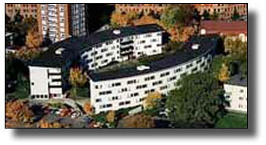

Arkitekt Hans Westman
Hans Westman levde mellan 1905-1991. Han var en känd skånsk arkitekt med kontor i Lund. Westman föddes och växte upp i Roslagen men eftersom hans far var ifrån Skåne så var det honom inte främmande att komma till Skåne efter arkitektexamen. Westman var produktiv som arkitekt från 1930-1980-talet. Han har ritat allt ifrån stall till kyrkor!
Historia
Westman läste till arkitekt på Kungliga Tekniska Högskolan i Stockholm 1925-1929. Eftersom funktionalismen fick sitt genombrott 1926-1927 i Sverige så påverkade dessa nya strömningar blivande arkitekter. Det syns tydligt att de hus Westman ritade på 1930-talet är funkishus; de har t.ex. platta tak och putsade fasader. Efter 1940 luckrades Westmans funktionalistiska stil upp och blev mer och mer regionalt anpassad.
Efter att ha gjort sin praktikperiod kom Westman till Skåne 1932. Han började som stadsplanearkitekt i Malmö. 1935 började Westman få egna uppdrag efter all den uppmärksamhet projektet att rita Lunds badhus (revs 1978) tillsammans med Tor Andersson medförde. Westmans verksamhet har varit förlagd till eget kontor 1936-1983 och 1938 flyttades verksamheten till Lund. 1939-1940 färdigställdes den egenritade villan på Nationsgatan 3 i Lund dit Westman också flyttade sitt kontor.
I början ritade Westman mest bostadshus, både flerbostadshus och villor. De mer statusfyllda, offentliga uppgifterna hägrade dock, eftersom de medgav större konstnärlig frihet. Kända verk, byggår inom parantes
Bland Hans Westman mest kända flerbostadshus i Lund finns förutom Norbergsgatan 5 (1939) även Vintergatan 2 (1949-52).
Både den egna villan på Nationsgatan 3 (1939) samt Villa Wiwen Nilsson, Olshögsvägen 14 (1938) är än idag välkända och speciella hus i Lund.
Även bland studentbostäderna har Hans Westman satt sina tydliga spår. Tomegapsgården (1950-51) och den spektakulära Parantesen (1962) bär hans signum.
Sidan är ursprungligen skriven av Ingela Agert. Källa: Tomas Tägil, Arkitekten Hans Westman - funktionalismen och den regionala särarten, 1996. Mer information om Hans Westman finns i Lunds Stadsbiblioteks Lundasamling i Ekska Huset. Foto från AF Bostäder.

- Norbergsgatan 5
- 22354 Lund
- styrelsen@sydgarden.m.se